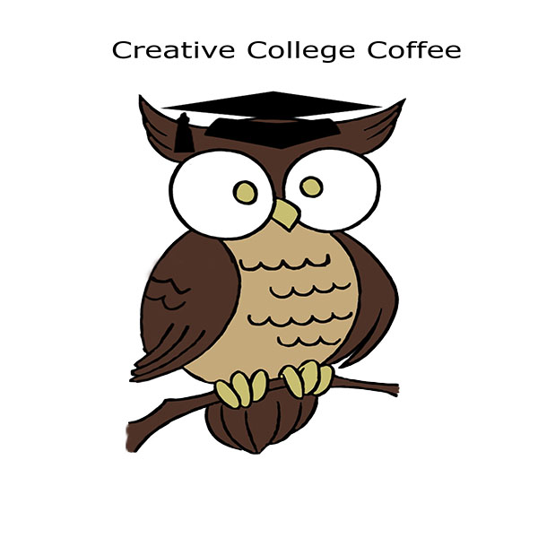
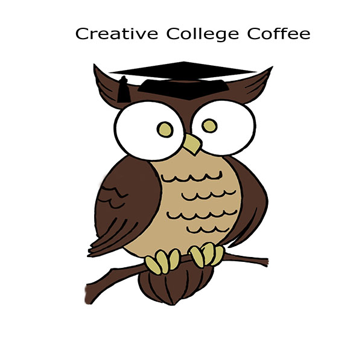

Major: Bachelor of Arts in Technical Communication
Background Information
I grew up on the Olympic Peninsula. I still have friends and family there. I moved to Spokane with my husband and daughter in 1999. I began my studies at Eastern Washington University to earn a Bachelor of Arts in Technical Communication in 2011, and I will graduate in June 2014 with minors in Anthropology and Graphic Design. I also have experience writing and editing for an on-line entertainment magazine.
Professional Objectives
My primary objective is to write content for a major publication, such as an academic journal. I am also interested in writing helpful user instructions, winning grants for non-profit agencies, and helping people expand their educations. I prefer working independently, but I am comfortable working on a group project as well. The best position will allow me to help the company increase readership and circulation and learn new writing skills.
Additional Links
My Tech Com Blog My LinkedIn Profile
 My Student Webspace
My LinkedIn Profile
 My Student Webspace
 My Twitter Profile
My Twitter Profile
© Nicole Elliott 2014